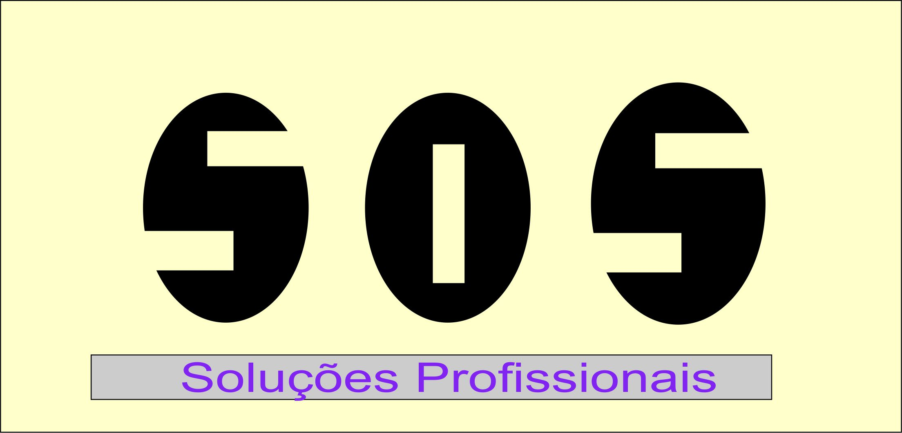
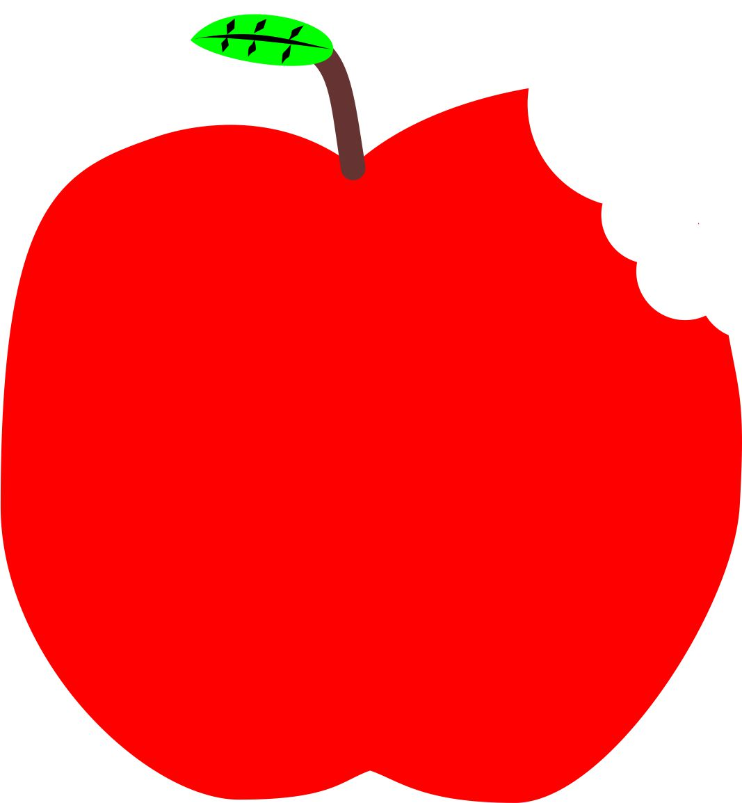
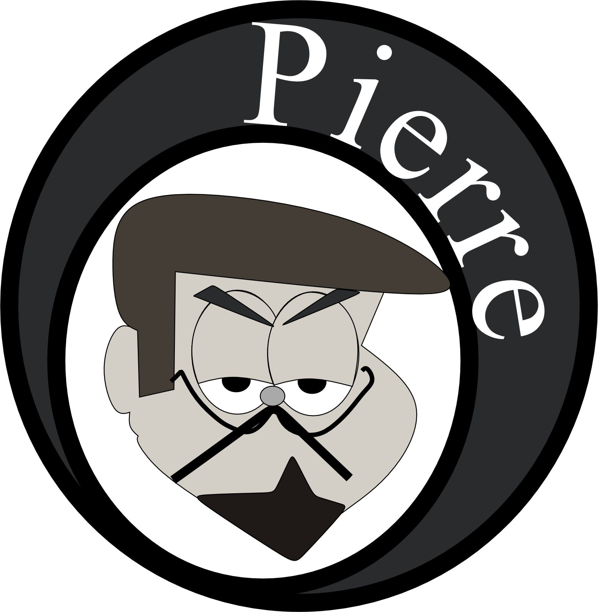

Heryc.
Sobre
Faculdade
Trabalhos
Contato
Portfólio
Meus Trabalhos
Estrela Colorida
Uma criação vibrante com paleta de cores deslumbrantes

SOS
Projeto com mensagem impactante e design marcante

Maçã
Trabalho detalhista com elementos naturais e texturas

Pierre
Criação artística com elegância e sofisticação